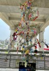
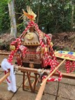
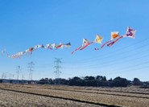
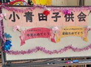

小青田子供会
小青田地区に住む小学１年生〜６年生までの子供たちが在籍しています。
小青田ふるさとセンターを拠点に、イベントや地域のお祭りに参加し、小学生だけでなく、おじいちゃんおばあちゃん、未就学児を含めたご家族と共に楽しく活動しています。
同じ地域に暮らす子供たちが学年関係なく交流できるコミュニティとなること、地域と家庭のつながりを深め地域全体で子供たちの健やかな成長を見守ることを目的にしています。
活動内容
-
子ども神輿、輪おどり（柏おどり）、七夕飾りコンクール、お祭り広場などが催される夏まつりです。七夕飾りは、子供たちが願いを書いた短冊と飾りを作成し笹に飾り付けます。たなかっ子祭会場と柏たなか駅前通路に展示されます。
-
夏の健康づくりと新学期に向けて生活リズムを整えるため、朝に公園で実施します。子どもはもちろん大人も一緒に、一日の始まりに元気に身体を動かしましょう。
-
地区対抗の運動会で町会ごとに大人と子供がチームとなり、玉入れや綱引き、リレー等の競技が行われます。老若男女誰もが楽しめて、地域住民の絆も深まります。
-
小青田地域住民の親睦を深める秋祭りです。子供会では子ども神輿を担いで町内を練り歩きます。わっしょい！わっしょい！元気な子供たちの掛け声がお祭りを盛り上げます。
-
田中地区の凧揚げ大会です。子供会では子どもたちが描いた凧をつなぎ合わせた連凧を作成し出場しています。会場には豚汁や綿あめ等の模擬店もあり、家族みんなで楽しめるイベントです。
-
卒業する６年生への感謝や進級する子供たちへお祝いの気持ちを込めて、お楽しみ会を開いています。子供会で過ごす最後の時間を楽しんでもらえるよう子供会役員が毎年工夫を凝らしています。記念品の豪華プレゼントは子供たちの毎年の楽しみです。
がんばる姿に拍手！田中地区市民運動会
【場所】田中中学校グラウンド
運動会チラシ
前日の雨でグラウンドの状態が心配されましたが、当日は無事に開催することができました。
開会式のころには雲の間から青空がのぞき、しばらくすると、かき氷が恋しくなるほどの暑さと日差しに。
今年度は、大人もお腹が空かないようにと、お菓子を配布。
町会からは飲み物とかき氷もご用意いただき、みんなで楽しく味わいました。
ムカデ競争では見事１位になるなど、たくさんの笑顔があふれる一日となりました。
競技に出場してくださった皆さま、応援してくださった皆さま、そして片付けを手伝ってくださった皆さま、本当にありがとうございました。
ラジオ体操
【場所】柏たなか第二公園 (小青田ふるさとセンター前)
詳細はこちら
8/25(月)-8/29(金)の5日間、天候にも恵まれ、ラジオ体操を開催しました。今年は夏休み最後の週のみの開催でしたが頑張って早起きをしてたくさんの子供たちと父兄の皆様、そして子供会に入っていない方々の参加もありました。
みんなで朝日を浴びながら1日の始まりにラジオ体操をすると清々しい気持ちになりました。
ラジオ体操以外にも交流を深める意味も込めて、子供たちにはプログラム案内のお知らせ係、体操のお手本係、ラジカセのスイッチ係、スタンプ押し係の役割を担って頂きました。突然のお願いにも関わらず積極的に手を挙げる子供たちが続々といて頼もしく感じられました。特にスタンプ押し係は人気がありました。
終了後には参加賞として、キャラクターシールがもらえ、それぞれ好きなキャラクターを懸命に探す姿が見られていました。

たくさんの皆様にご参加を頂き、無事に開催できたことに感謝申し上げます。
今後も子供会では様々な行事を予定しておりますのでご参加の程、お待ちしております。
七夕飾り作成会
【日時】６月８日(日) １０時～１２時
【場所】小青田ふるさとセンター
詳細はこちら
今年度初めてのイベントとなる七夕飾り作成会。今年は子供たちが小青田ふるさとセンターに集まり、短冊や飾りを作りながら交流を深める機会になるよう作成会を開催しました。
折り紙を使った七夕飾りは、得意不得意があっても楽しめるように、貝飾り、吹き流し、星かざり、おおぎつづりの４種類と、折り紙好きの子や保護者の方向けに難易度高めな立体オーナメントの作り方を用意。当日参加してくださる皆さんが楽しめるようにと準備を進めました。
当日は予想をはるかに上回る盛況ぶり。一時は満席になるほど賑わいました。
子供たちは、どの飾りを作るか相談したり、完成した作品を見せ合ったり。兄弟姉妹で作り方を教え合ったりする姿が見られました。星飾りの星をハートやくらげの形にして楽しむ姿もあり、子供たちの発想力や想像力には驚かされました。
楽しい！もう一つ作る！と、色とりどりの飾りをたくさん作ってくれました。笹に飾り付けたらどんな姿になるのか、たなかっ子祭が楽しみです。
こちらに、七夕飾りの作り方をご紹介します。ぜひ作ってみてください！
貝飾り・吹き流し・星かざり・おおぎつづり
立体オーナメント
たなかっ子祭
※令和７年度の開催は猛暑予想のため中止となりました。
【日時】７月６日(日) 午前９時～正午
【場所】柏市立田中中学校
詳細はこちら
たなかっ子祭は猛暑のため残念ながら中止となりましたが、当日は予定を変更してお菓子の配布と笹への飾りつけ作業を子供たちや保護者の皆様と一緒に行いました。
小青田ふるさとセンターの入り口前には、大きな笹がスタンバイ。
すごーい！大きい！と子供たちは大喜びです。お菓子を受け取ると、自分の願い事を書いた短冊を好きな場所に取り付けていきました。笹の枝に紐を縛り付ける作業は難しい様子もありましたが、一生懸命に行ってくれました。
飾りつけられた笹は、柏たなか駅前連絡通路へ展示させていただきました。
まっすぐに伸びた笹を彩る鮮やかな七夕飾り、サラサラと風になびく葉の音は、暑さを忘れさせるほど綺麗でした。
展示は、７月６日（日）～７月１５日（水）までとなります。ぜひご覧ください。
また、小青田町会の役員のみなさまには、笹の準備から駅通路への設置までご協力をいただきありがとうございました。
子どもたちの願いがどうか天まで届きますように・・・
会費
未加入： (保護者1名 + 子供の人数) × ¥1,200 + 免責金 ¥2,500
※途中退会される場合でも返金は致しかねます。
入会案内
小青田在住の小学生が対象です。何年生からでもご入会いただけます。
入会をご希望の方は、下記のフォームからお申し込みをお願いします。
入会申し込みフォームはこちら
ご質問・お問い合わせは、下記のメールアドレスまでご連絡ください。
koaota.kodomo@gmail.com